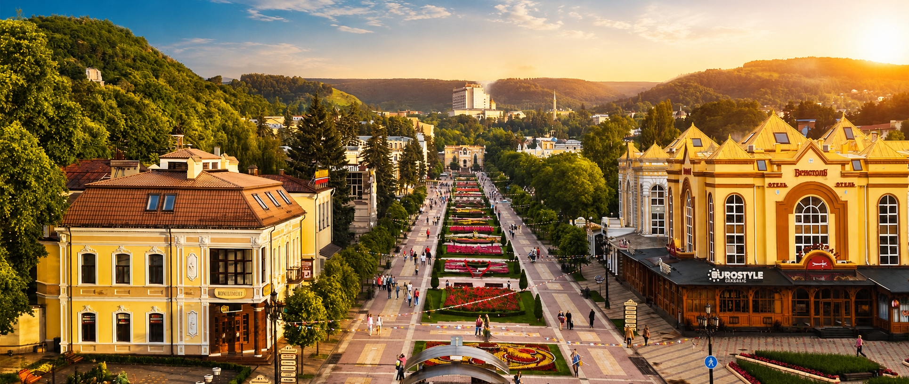
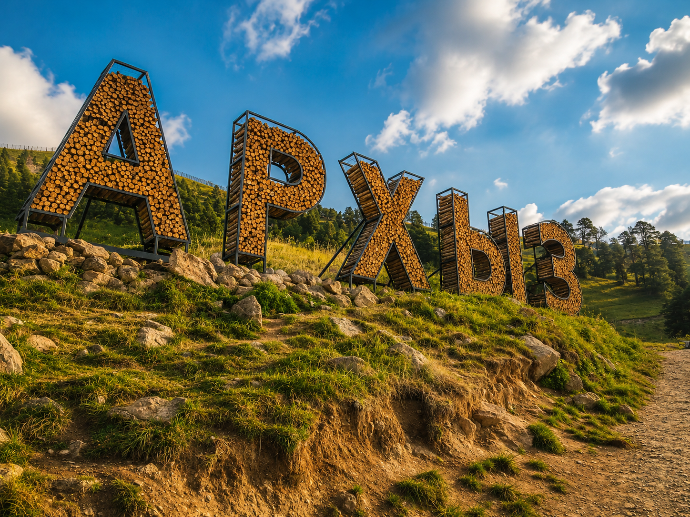

Города
Направления Северного Кавказа:
Выберите город для будущего путешествия

Пятигорск
Курорт с южным характером, легендами Лермонтова и видами, ради которых хочется задержаться еще на один вечер.
Факт: Пятигорск считается старейшим грязевым и бальнеологическим курортом Кавказских Минеральных Вод.
Кисловодск
Город для неспешных прогулок, нарзана и красивого восстановления сил среди парков, горного воздуха и мягкого света.
Факт: Кисловодский национальный парк входит в число крупнейших рукотворных парков Европы.
Ессентуки
Элегантный курорт с историческими галереями, спокойным ритмом и той самой водой, которую знают далеко за пределами Кавказа.
Факт: минеральные воды Ессентуки N 4 и N 17 стали визитной карточкой города.
Архыз
Место для тех, кто хочет проснуться у подножия хребтов, увидеть прозрачные реки и почувствовать Кавказ ближе к небу.
Факт: рядом с Архызом находится Специальная астрофизическая обсерватория РАН.
Эльбрус
Направление с масштабом настоящего приключения: ледники, панорамы, канатные дороги и ощущение большой высоты.
Факт: Эльбрус высотой 5642 метра является самой высокой вершиной России и Европы.
Домбай
Домбай встречает яркими склонами, быстрыми реками и маршрутами, где каждый поворот выглядит как готовая открытка.
Факт: Домбайская поляна расположена на высоте около 1600 метров над уровнем моря.
Открой для себя Кавказ с высоты птичьего полёта.